Deterministically generated from the supplied annotated transcript. All counts are row-based unless explicitly stated.
Instructor: Instructor1
Learners (4): Student1, Student2, Student3, Student4
Labels are model/human annotations supplied in the input, not independently verified facts. Sequence associations are proximity-based candidates, not confirmed pedagogical or causal links. Repeated timestamps make exact speaking-time estimates unreliable. No claims about learning gains, feedback effectiveness, or missed teaching opportunities are inferred.
| Measure | Value |
|---|---|
| Unknown label rows | 18 |
| Multi-label rows | 17 |
| Approximate word count | 4207 |
| Duration from transcript endpoints (minutes) | 36.3 |
Rule: find the first target event within 4 intervening rows, stopping at another source event. These are candidate associations only. See sequence_links.csv and evidence_index.csv for full provenance.
| Measure | Value |
|---|---|
| Error To Corrective Feedback | 6/54 source rows have a candidate within 4 intervening rows |
| Feedback To Uptake | 4/101 source rows have a candidate within 4 intervening rows |
| Prompt To Prompt Response | 51/158 source rows have a candidate within 4 intervening rows |
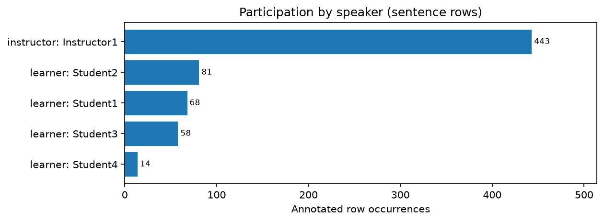
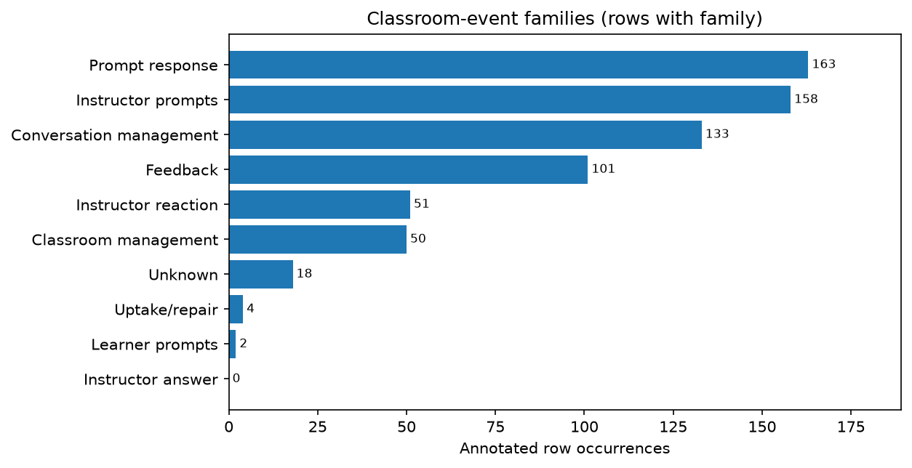
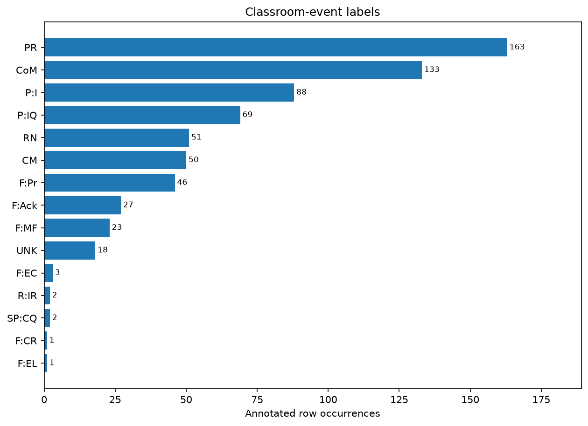
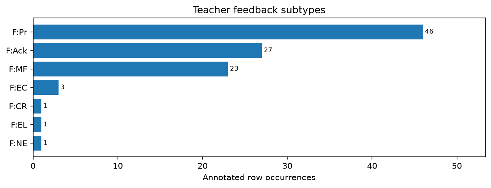
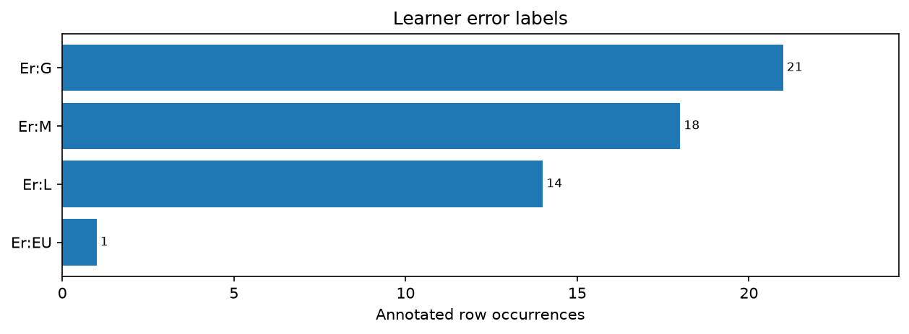
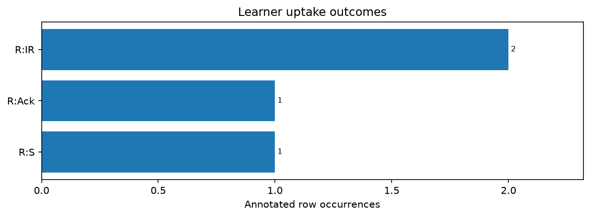
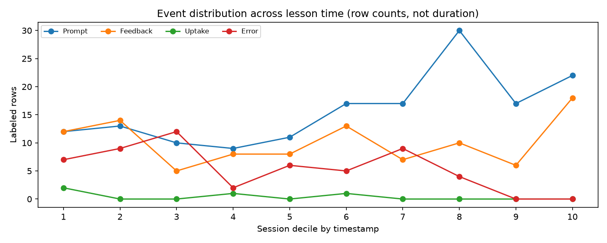
The lesson is divided into 10 equal time intervals (1 = beginning, 10 = end). Each line counts sentence rows tagged as Prompt, Feedback, Uptake, or Learner Error within that interval. Higher points mean more tagged rows, not more speaking time. These counts do not establish learner progress or feedback effectiveness.
Speaker names are grouped case-insensitively. Error incidence is the proportion of each learner's rows with an error label, not an assessment of proficiency. Counts reflect annotations, and reading aloud or task differences may affect comparisons.
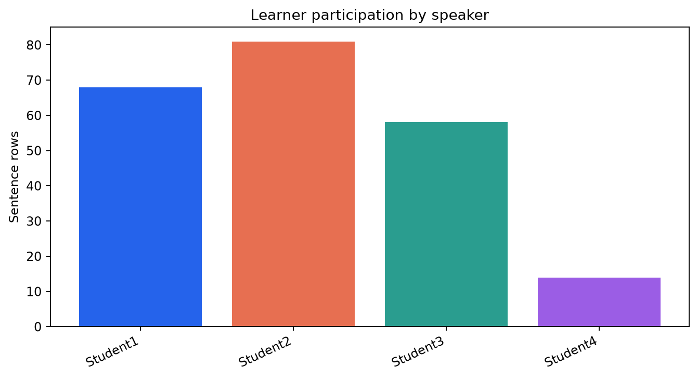
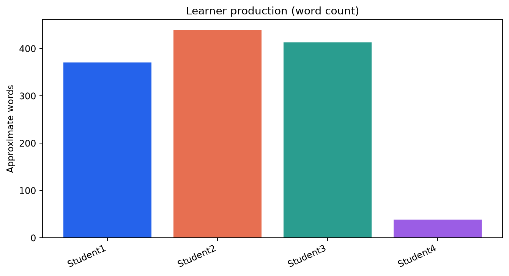
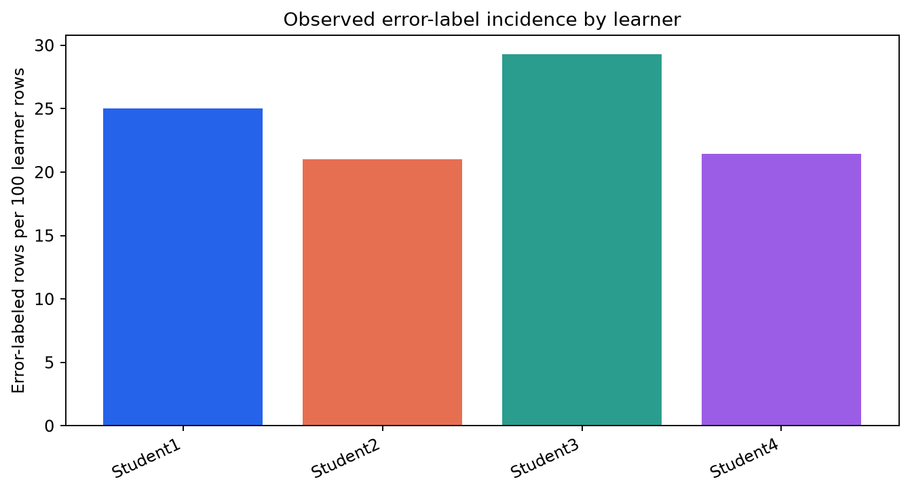
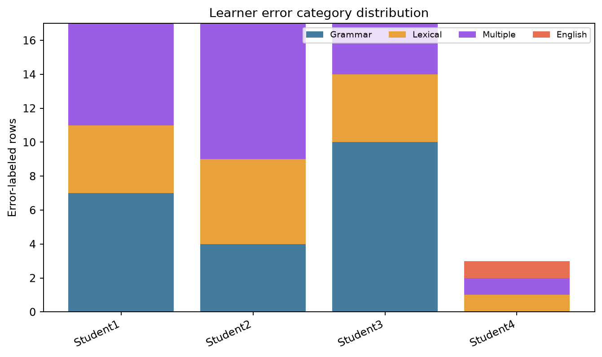
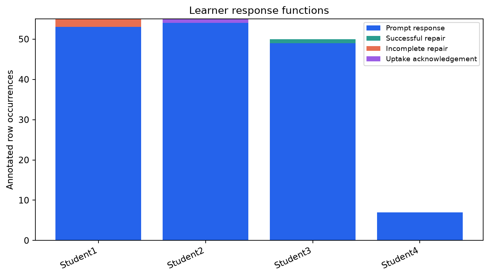
Short definitions of the supplied annotation codes. Classroom-event labels and learner-error labels are independent.
| Code | Full name | Short definition |
|---|---|---|
P:I | Instructor instruction | Directs or assigns learner production. |
P:IQ | Instructor information question | Requests information or an answer. |
P:CQ | Instructor clarification question | Requests clarification outside corrective feedback. |
F:EC | Explicit correction | Overtly supplies a corrected form. |
F:R | Recast | Reformulates learner production without overt correction. |
F:CR | Clarification request | Signals a problem and requests clarification. |
F:EL | Elicitation | Invites learner to supply the target form. |
F:MF | Metalinguistic feedback | Comments on a language form or rule. |
F:CC | Confirmation check | Checks an interpretation or form. |
F:Pr | Praise | Positively evaluates learner performance. |
F:Ack | Feedback acknowledgement | Acknowledges or repeats an accepted learner form. |
F:NE | Negative evaluation | Marks production as incorrect without supplying a correction. |
A | Instructor answer | Answers a learner question. |
RN | Instructor reaction | Responds to content rather than linguistic accuracy. |
CM | Classroom management | Organizes participation, logistics, or technology. |
CoM | Conversation management | Regulates conversational flow or backchannels. |
PR | Prompt response | Learner responds to a prompt or task. |
SP | Student prompt | Learner initiates an interaction. |
SP:I | Student instruction | Learner directs an action. |
SP:IQ | Student information question | Learner asks for information. |
SP:CQ | Student clarification question | Learner asks for clarification or assistance. |
R:S | Successful repair | Learner resolves a feedback-targeted problem. |
R:IR | Incomplete repair | Learner attempts but does not complete repair. |
R:Ack | Uptake acknowledgement | Learner acknowledges feedback without reformulation. |
R:NR | No uptake | No uptake before the interaction moves on. |
UNK | Unknown | Function cannot be determined reliably. |
Er:G | Grammar error | One observable grammatical error. |
Er:L | Lexical error | One observable lexical error. |
Er:M | Multiple errors | Multiple observable grammatical or lexical errors. |
Er:EU | English utterance | Substantially English when Spanish is expected. |
Downloadable alongside this report: summary.json, label_frequencies.csv, error_frequencies.csv, speaker_statistics.csv, learner_statistics.csv, sequence_links.csv, and evidence_index.csv. The report contains no LLM-generated narrative.